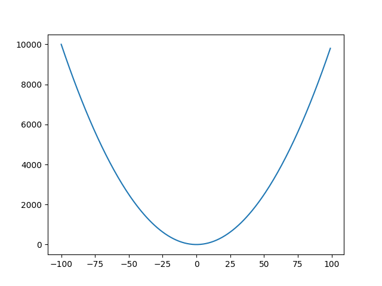
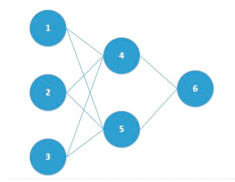
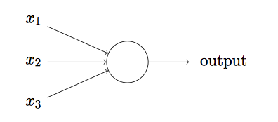
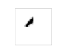
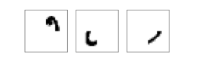
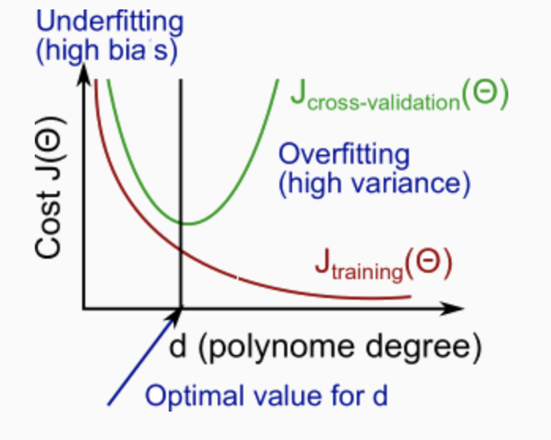
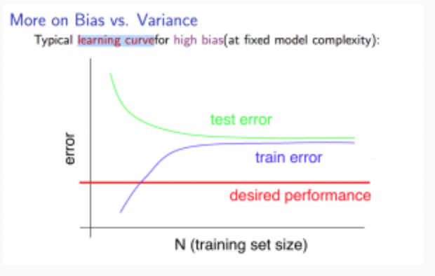
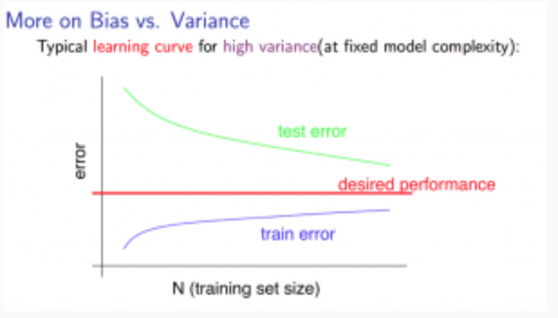
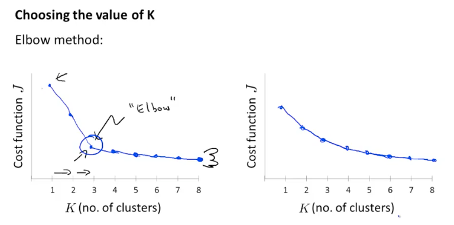
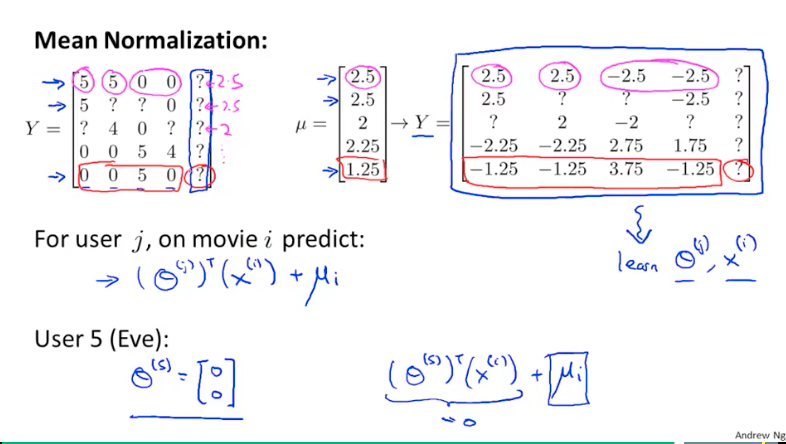

本文用于记录学习Coursera中Machine Learning课程的笔记
12.4 update: fully understand the differences between supervised learning & unsupervised learning here
第一周
regression: predict continuous valued output
supervised learning: right answer given
benign tumor | malignant tumor
market segmentation
监督学习及其分类
In supervised learning, we are given a data set and already know what our correct output should look like, having the idea that there is a relationship between the input and the output.
Supervised learning problems are categorized into “regression” and “classification” problems. In a regression problem, we are trying to predict results within a continuous output, meaning that we are trying to map input variables to some continuous function. In a classification problem, we are instead trying to predict results in a discrete output. In other words, we are trying to map input variables into discrete categories.
函数h 是一个约定俗成的函数
表示的内容为hypotheses，也就是经过算法学得的函数
$h_{\theta}(x) = \theta_{0} + \theta _{1}x$ 表示参数变量为$\theta$，自变量为$x$的函数
一般会简写为$h(x) = \theta_{0} + \theta _{1}x$
cost function $J(\theta_{0}, \theta_{1}) = \displaystyle \frac{1}{2m}\sum_{i=1}^{m}(h(x^{(i)}) - y^{(i)})^2$
表示代价函数的参数为theta
最小化代价函数的符号为 $\underset{\theta_{0}, \theta_{1}}{\text{minimize}}J(\theta_{0}, \theta_{1})$
梯度下降法在进行参数的更新时，该层的参数必须使用上一层的参数进行更新，而不可以使用本层的参数
即在进行某个参数的更新时，必须保证使用的参数都是上一层的
使用temp0 暂存 theta0 的数据
关于梯度下降的公式 $\theta_{i} := \theta_{i} - \alpha \displaystyle \frac{\partial}{\partial \theta_{i}}J(\theta_{i})$
为什么后面的符号为减号而不是加号
总的来说，梯度下降法是寻找最小值的一种收敛法

从该图来说，如果选择50作为起始点，那么因为是为了寻找较小值，所以需要向左边移动，因此要减去该点对应的正值导数的适当比例
实际上，梯度法求极值对应的自变量坐标，其中的导数不过是提供了一个方向而已
前面还有fancy的参数叫做学习率，其实也就是一次的步长
按理说学习率应该越小越好，因为梯度法当出现因学习率过大导致跨越了最优值时，该参数就不合适了。同时考虑到想要迭代次数尽可能小，所以学习率又需要适当大。可以说这里就是需要所谓的调参。
但是需要注意的是，如果学习率过小，并且代价函数最优解附近的导数都比较小，那么将会出现每一次迭代走过的步越来越小，导致还没有到达最优解就已经停止收敛。(这个要参照退出循环的条件)
所以这个参数的选择还是有一定的考究的。
如果目前已经到达了最优解，那么因为该点的导数为0，所以该值不会进行更新
线性回归任务的代价函数一定是凸函数!!!
第三周
收获：总结出了将运算向量化的步骤！深入理解了对数回归！
为什么最大似然估计必定是凸函数
关于为什么在代价函数中总是约定$h_{\theta}(x)= \displaystyle \frac{1}{1 + e^{-\theta ^{T}x}}$，其中后面自然指数的幂次总是这样的形式？
此时认为$\theta $和$x$都是列向量
可是在实际应用中，总是将一个样本中的数据放到一行中进行展示，最后一列表示target。所以此处存在一个别扭的转换。
扩展了一些收敛迭代方法; 建议直接调用库函数，而不要自己去实现
- conjugate gradient
- BFGS
- L-BFGS
直接使用库函数会使得难以调试，但是带来的效率是值得的
针对多分类任务，我们设置多个不同的“假设”$h_{\theta}^{(i)}(x) = P(y = i | x; \theta)$
表示目前在分类第i个类别，使用$\theta$作为参数，x作为自变量
假设在数据中我们有k个需要抽取出来的特征，那么我们就需要设置k个分类器
这是因为每次筛选数据的时候，并不是每进行一步就将筛选出来的数据剔除
而是针对每一种特征训练出来一种分类器，共需要k个分类器
逻辑回归 - 我的理解
关于为什么使用该函数$\displaystyle \frac{1}{1 + e^{-\theta ^T x}}$ ？ 是因为该函数可导连续，并且可以很好地从原点将坐标系分为两部分
insight：归根结底，是对$-\theta^T x$的拟合 => 如果大于0，那么 预测为正例，否则为反例。此时传入的参数可以为非线性的，即$x^2, x^3, x^4 …$此类，使其可以完成非线性任务。
处理过拟合的两种办法
减少参数数量 - 可以人为选择保留的参数；可以使用模型选择算法，判断哪些参数保留，哪些扔掉
该方法的缺点是也许所有的参数都有用，但是仍然会把它扔掉；
归根到底还是算法或者选择不当，如果把这个因素修改完成，那么一样可以达成过拟合的目的
正则化 - 保留所有参数，但是减少参数的影响；适用于有很多个参数同时每个参数都有作用
正则化实际上就是修改代价函数，来使得某些参数应该尽可能偏小
具体的方法是在代价函数后加上一些类似$1000\theta_{i}^2$这样的项，如此一来就可以达到减小该项影响的作用
正则化中的$\lambda$是为了均衡两个目标 - 与训练集更匹配bias & 函数图形更简单variance
在正规方程中使用正规化，甚至可以将矩阵转化为绝对可逆
关于运算的向量化
$$\theta_j = \displaystyle \sum_{i = 1} ^{m}(h_{\theta}(x^{(i)}) - y^{(i)})x_{j}^{(i)}$$ <=>
grad = X' * (sigmoid(X * theta) - y) / m上式在起初学习的时候我不明白应该如何进行计算，于是使用了两个for循环来处理
但是如果仔细考察的话，可以发现使用矩阵运算即可完成
之前我习惯把求和以及前面的括号看成一团，后面的看成一部分，但是实际上要把求和号后面的看成一个整体
我决定对这个东西做一个总结，这其中必定存在某种普遍使用的结论
- 前面的求和号，表示括号中的元素和后面的x必定分别属于矩阵的某行某列
- 注意到i的变化是从小到大，所以相对于矩阵运算，必定是从左到右、从上到下
- 如果将括号中的元素视为一个列向量的话，那么x必定是从左到右；注意到其j下标是不变的，所以x矩阵中的一行，表示的是每个样本数据的第j个数据
搞定！
octave中的size函数，第二个参数用来标记返回的是行数还是列数
在使用正则化时，注意代价函数不计算常数项的参数$\theta_0$
同时在更新
theta(2:n)的时候，仍然可以使用向量化运算，注意将n维中的第一维删除掉
第四周
神经网络产生的背景
当使用多项式假设时，面对多个特征，如果要暴力组合所有的配对方案，那么将会产生数目巨大的feature；而如果使用较小的feature，那么就会产生欠拟合的问题
每一个输入以及输出都从1开始编号，每一层都特殊设置一个偏移量，该偏移量从0开始编号
也就是对应的阈值
input layer + hidden layer + output layer
机器学习可以看做是数理统计的一个应用，在数理统计中一个常见的任务就是拟合，也就是给定一些样本点，用合适的曲线揭示这些样本点随着自变量的变化关系。
深度学习同样也是为了这个目的，只不过此时，样本点不再限定为(x, y)点对，而可以是由向量、矩阵等等组成的广义点对(X,Y)。而此时，(X,Y)之间的关系也变得十分复杂，不太可能用一个简单函数表示。然而，人们发现可以用多层神经网络来表示这样的关系，而多层神经网络的本质就是一个多层复合的函数。
作者：Anonymous
for the parameter $\theta$ , it is a matrix with three dimensions
suppose that now we are at i-th layer, then $\theta^{(i)}$ have a dimension of $size(s_{i + 1}) \times (size(s_{i}) + 1)$, and $x^{(i)}$ has the dimension of $(size(s_i) + 1) \times 1$
because in the future we are going to calculate $z^{(i+1)} = \theta^{(i)} * x^{(i)}$ where $x^{(i)} = a^{(i)}$,
after we get the value of $z$ and put it into the sigmoid function, we get $a^{(i)} = g(z^{(i)})$
in the every layer, we can regard the parameter as one function which is learned by the nodes before it
so our final result is made of many functions to evaluate the aim function.
network architectures refer to how the different neurons are connected to each other.
notes about
octave.*will return a vector rather than a scalar value[a, b] = max(A, [], 2)will return the information about this matrixthe first return parameter is maximum value in every line
the second return parameter is index of every maximum value in every line
in the
maxfunction, the first parameter is the matrix we concerned, the second is the default value which shouldn’t be changed, the third parameter represents to search according to column-1, or row-2
第五周
The cost function of neural networks:
$J(\Theta) = \displaystyle - \frac{1}{m}\sum_{i = 1}^{m} \sum_{k = 1}^K[y_k^{(i)}log((h_{\Theta}(x^{(i)}))_k) + (1 - y_k^{(i)}) log(1 - (h_{\Theta}(x^{(i)}))k)] + \frac{\lambda}{2m}\sum{i = 1}^{L - 1}\sum_{i = 1}^{s_l}\sum_{j = 1}^{s_l + 1}(\Theta_{j, i}^{(l)})^2$
We have added a few nested summations to account for our multiple output nodes. In the first part of the equation, before the square brackets, we have an additional nested summation that loops through the number of output nodes.
In the regularization part, after the square brackets, we must account for multuple theta matrices. The number of columns in our current theta matrix is equal to the number of nodes in our current layer(including the bias unit). The number of rows in our current theta matrix is euqal to the number of nodes in the next layer(excluding the bias unit).
Note:
- the double sum simply adds up the logistic regression costs calculated for each cell in the output layer
- the triple sum simply adds up the squares of all the individual $\Theta$s in the entire network
- the i in the triple sum does not reger to training example, but the part before it does!
- the first part of this funciton is all $K$ logistic regression added up separately.
如何直观地解释 backpropagation 算法？ - Anonymous的回答 - 知乎
https://www.zhihu.com/question/27239198/answer/89853077观后感：BP神经网络就是链式法则
该文对于理解BP神经网络有极大的帮助
看到评论里有人表示这个其实是动态规划，真是naive
因为error的限制，只能从输出层向输入层传递，另外需要每次计算出同层的所有结点再进行传递，这大概就是BP神经网络的框架
BP神经网络的公式推导
https://www.cs.swarthmore.edu/~meeden/cs81/s10/BackPropDeriv.pdf
new instructions of octave
if we have many matrices of different scales, and want to unroll them into one datastructure, then we can do it by
thetaVector = [ Theta1(:); Theta2(:); Theta3(:); ]and get the matrices back by
Theta1 = reshape(thetaVector(1:110),10,11);Theta2 = reshape(thetaVector(111:220),10,11);Theta3 = reshape(thetaVector(221:231),1,11);gradient checking, which is to check the whether the rough derivative function could get a similiar value in regard to the value we get from the derivative function of BP algorithm
神经网络的初始化参数问题 - 为什么不可以像回归问题一样全部置0？

考虑给定的神经网络，其中结点1, 2, 3在输入层，结点4, 5在隐含层，结点6位于输出层
假定：输入各不相同；初始化全部参数为0。
第一次正向传播过程中，后面结点上激活值均为0.5
第一次反向传播过程中，结点4, 5的输入由于相同，所以它们学得的权重相同；同时由于输入层到隐含层的参数在计算时，它们的输入也都相同，所以学得的参数也都相同
- 第二次正向传播过程中，结点4, 5的输入相同，所以激活值相同，进而得到输入
- 第二次反向传播过程中，结点4, 5学得的权重仍然相同；同时结点1学得的两个权重相同、结点2学得的两个权重相同、结点3学得的两个权重相同(这是因为权重的学习与三个量相关，一个是该结点的激活值，一个是上一层的误差，一个是两层之间的权重)
作业总结
因为octave类似python没有先声明后使用的规则，所以会出现一种很神奇的BUG - 变量名拼错
这种BUG在这种语言里面实在是危险，出现的时候不会有任何的报错信息
梯度降矩阵的规模与$\Theta$矩阵的规模一致，将来更新的时候也就是更新这些参数
《神经网络与深度学习》
吴恩达的课程解释得太浅，学得的大概只是一个神经网络的框架
希望能够借助这本书来对神经网络有一个更深入的理解
人工神经元模型
感知机

示例中的感知机有三个输入，$x_1, x_2, x_3$
$$output = \displaystyle \begin{cases} 0 & \text{if } \sum_jw_jx_j \leq \text{threshold} \ 1 & \text{if} \sum_j w_j x_j > \text{threshold }\end{cases}$$
我们可以把偏置看成一种表示让感知机输出1有多容易的估算。
S型神经元
如果对权重的微小改动能够仅仅引起输出的微小变化，那么我们可以利用这一事实来修改权重和偏置，让我们的网络能够表现得像我们想要的那样。我们重复这个工作，反复改动权重和偏置来产生更好的输出。这时网络就在学习。
可是问题在于网络中单个感知机上一个权重或偏置的微小改动有时候会引起那个感知机的输出完全翻转。
我们可以引入一种称为S型神经元的模型来克服这个问题。
正如一个感知机，S型神经元有多个输入，$x_1, x_2, …$。但是这些输入可以取0和1中的任意值，而不仅仅是0或1.其输出现在不是0或1，而是$\sigma(w \cdot x + b)$，其中$\sigma$被称为S型函数，定义为$\displaystyle \sigma(z) = \displaystyle \frac{1}{1 + e^{-z}}$
$\sigma$的平滑意味着权重和偏置的微小变化，即$\Delta w_j$和$\Delta b$，会从神经元产生一个微小的输出变化$\Delta \text{output}$。实际上，微积分告诉我们
$$\displaystyle \Delta \text{output} \approx \sum_j \frac{\partial\text{output}}{\partial w_j} \Delta w_j + \frac{\partial\text{output}}{\partial b} \Delta b$$
手写数字识别, 为什么不用4个输出表示二进制数字完成任务？
最终的判断是基于经验主义的：我们可以实验两种不同的⽹络设计，结果证明对于这个特定的问题而⾔，10 个输出神经元的神经⽹络⽐ 4 个的识别效果更好。但是令我们好奇的是为什么使⽤ 10 个输出神经元的神经⽹络更有效呢。有没有什么启发性的⽅法能提前告诉我们⽤ 10 个输出编码⽐使⽤ 4 个输出编码更有好呢？
为了理解为什么我们这么做，我们需要从根本原理上理解神经⽹络究竟在做些什么。⾸先考虑有 10 个神经元的情况。我们⾸先考虑第⼀个输出神经元，它告诉我们⼀个数字是不是 0。它能那么做是因为可以权衡从隐藏层来的信息。隐藏层的神经元在做什么呢？假设隐藏层的第⼀个神经元只是⽤于检测如下的图像是否存在：

为了达到这个⽬的，它通过对此图像对应部分的像素赋予较⼤权重，对其它部分赋予较小的权重。同理，我们可以假设隐藏层的第⼆，第三，第四个神经元是为检测下列图⽚是否存在：

如果所有隐藏层的这四个神经元被激活那么我们就可以推断出这个数字是 0。当然，这不 是我们推断出 0 的唯⼀⽅式 —— 我们能通过很多其他合理的⽅式得到 0 （举个例⼦来说，通过 上述图像的转换，或者稍微变形）。但⾄少在这个例⼦中我们可以推断出输⼊的数字是 0。
假设神经⽹络以上述⽅式运⾏，我们可以给出⼀个貌似合理的理由去解释为什么⽤ 10 个输 出而不是 4 个。如果我们有 4 个输出，那么第⼀个输出神经元将会尽⼒去判断数字的最⾼有效 位是什么。把数字的最⾼有效位和数字的形状联系起来并不是⼀个简单的问题。很难想象出有 什么恰当的历史原因，⼀个数字的形状要素会和⼀个数字的最⾼有效位有什么紧密联系。
上述只是一个猜测… 有一些勉强的感觉… 可能这就是所谓玄学吧
为什么代价函数是二次代价？而不是直接最大化正确分类的数量？
这时因为被正确分类的图像数量所关于权重和偏置的函数并不是一个平滑的函数。大多情况下，对权重和偏置做出的微小变动完全不会影响被正确分类图像的数量。这回导致我们很难去解决如何改变权重和偏置来取得性能的提升。
梯度下降法的直观理解
我们想象有⼀ 个小球从⼭⾕的斜坡滚落下来。我们的⽇常经验告诉我们这个球最终会滚到⾕底。也许我们可 以⽤这⼀想法来找到函数的最小值？我们会为⼀个（假想的）球体随机选择⼀个起始位置，然 后模拟球体滚落到⾕底的运动。我们可以通过计算 C 的导数（或者⼆阶导数）来简单模拟——这些导数会告诉我们⼭⾕中局部“形状”的⼀切，由此知道我们的球将怎样滚动。
随机梯度下降法的直观理解
我们可以把随机梯度下降想象成一次民意调查：在一个小批量数据上采样比对一个完整数据集进行梯度下降分析要容易得多，正如进行一次民意调查比举行一次全民选举要更容易。
在计算量和迭代次数上面，SGD与GD没有差别，但是在一次迭代中SGD可能会更新很多次，因此会比GD收敛得更快，这也是平时所说的SGD比GD快的意思。
BP神经网络公式的直观理解
回忆一下sigmoid函数，当$\sigma(z_j^L)$近似微0或者1的时候，该函数变得非常平。这时$\sigma^\prime (z_j^L) \approx 0$。所以如果输出神经元处于低激活值或者高激活值时，最终层的权重学习缓慢。这样的情形，我们常常称输出神经元已经饱和了，并且权重学习也会终止。类似的结果对于输出神经元的偏置也是成立的。
第六周
We can promote the performance of out machine learning algorithms by
- Getting more training examples
- Trying smaller sets of features
- Trying additional features
- Trying polynomial features
- Increasing or decreasing λ
However, it is important to decide which measure to take to propmote our algorithm because any of them is time-costing.
A hypothesis may have a low error for the training examples but still be inaccurate because of overfitting. Thus, to evaluate a hypothesis, given a dataset of training examples, we can split up teh data into two sets: a training set and a test set.
Given many models with different polynomial degrees, we can use a systematic approach to identify the ‘best’ function. In order to choose the model of your hypothesis, you can test each degree of polynomial and look at the error result.
One way to break down our dataset into the three sets is:
- Training set: 60%
- Cross validation set: 20%
- Test set: 20%
We can now calculate three separate error values for the three different sets using the following method:
- Optimize the parameters in Θ using the training set for each polynomial degree.
- Find the polynomial degree d with the least error using the cross validation set.
- Estimate the generalization error using the test set with $J_{test}(\Theta^{(d)})$, (d = theta from polynomial with lower error);
This way, the degree of the polynomial d has not been trained using the test set.
为了使得模型的generalization能力更强，将数据分为两部分，一部分用于训练(训练集和验证集)，另一部分用于测试。
训练集的数据用于训练模型，验证集的数据用于选择模型(如神经网络的结构、回归模型中的幂次等)，测试集的数据用于测试模型的performance。
一般来说validation上的cost会比test上的cost要小，这是因为前者相对于后者多了一些表示模型的参数。
The bias is an error from erroneous assumptions in the learning algorithm. High bias can cause an algorithm to miss the relevant relations between features and target outputs (underfitting).
The variance is an error from sensitivity to small fluctuations in the training set. High variance can cause an algorithm to model the random noise in the training data, rather than the intended outputs (overfitting).
The training error will tend to decrease as we increase the degree d of the polynomial.
At the same time, the cross validation error will tend to decrease as we increase d up to a point, and then it will increase as d is increased, forming a convex curve.
High bias (underfitting): both $J_{train}(\Theta)$ and $J_{CV}(\Theta)$ will be high. Also, $J_{CV}(\Theta) \approx J_{train}(\Theta)$.
High variance (overfitting): $J_{train}(\Theta)$ will be low and $J_{CV}(\Theta)$ will be much greater than $J_{train}(\Theta)$.

How do we choose our parameter \lambdaλ to get it ‘just right’ ? In order to choose the model and the regularization term λ, we need to:
- Create a list of lambdas (i.e. λ∈{0,0.01,0.02,0.04,0.08,0.16,0.32,0.64,1.28,2.56,5.12,10.24});
- Create a set of models with different degrees or any other variants.
- Iterate through the λs and for each λ go through all the models to learn some Θ.
- Compute the cross validation error using the learned Θ (computed with λ) on the $J_{CV}(\Theta)$ without regularization or λ = 0. That’s because we have got the model parameters with the effect of regularization.
- Select the best combo that produces the lowest error on the cross validation set.
- Using the best combo Θ and λ, apply it on $J_{test}(\Theta)$ to see if it has a good generalization of the problem.
learning curves
Experiencing high bias:
Low training set size: causes $J_{train}(\Theta)$ to be low and $J_{CV}(\Theta)$ to be high.
Large training set size: causes both $J_{train}(\Theta)$ and $J_{CV}(\Theta)$ to be high with $J_{train}(\Theta)$≈$J_{CV}(\Theta)$.
If a learning algorithm is suffering from high bias, getting more training data will not (by itself) help much.

Experiencing high variance:
Low training set size: $J_{train}(\Theta)$ will be low and $J_{CV}(\Theta)$ will be high.
Large training set size: $J_{train}(\Theta)$ increases with training set size and $J_{CV}(\Theta)$ continues to decrease without leveling off. Also, $J_{train}(\Theta)$ < $J_{CV}(\Theta)$ but the difference between them remains significant.
If a learning algorithm is suffering from high variance, getting more training data is likely to help.

当出现欠拟合时，增大数据量是没有用处的；而在过拟合时，增大数据量可以使得训练集数据与真实数据更加接近，使得模型的精度提高
Our decision process can be broken down as follows:
Getting more training examples: Fixes high variance
Trying smaller sets of features: Fixes high variance
Adding features: Fixes high bias
Adding polynomial features: Fixes high bias
Decreasing λ: Fixes high bias
Increasing λ: Fixes high variance.
The recommended approach to solving machine learning problems is to:
- Start with a simple algorithm, implement it quickly, and test it early on your cross validation data.
- Plot learning curves to decide if more data, more features, etc. are likely to help.
- Manually examine the errors on examples in the cross validation set and try to spot a trend where most of the errors were made.
第七周
The form of SVM model’s cost function is similiar to the cost function of logistic regression
$$
\displaystyle minC\sum_{i=1}^{m}[y^{(i)}cost_1(\theta^Tx^{(i)}) + (1 - y^{(i)})cost_0(\theta^Tx^{(i)})] + \frac{1}{2}\sum_{i = 1} ^n \theta^2_j
$$
and the two parts of the $cost$ are some function which have the following properties
$$
\begin{cases}\theta^Tx \ge 1 & y = 1 \\ \theta^Tx\le -1 & y = 0\end{cases}
$$support vector machine is also called large margin machine
the value of $C$ denotes the value we view to the loss of training data
if $C$ is very large, then even if there are some bad data exist in the training data, the algorithm will still try to set the margin according to the training data. => high variance
if $C$ is reasonably small, then the algorithm could ignore the bad data and try to get a subjective regression => high bias
SVM with kernels
$$
\displaystyle minC\sum_{i=1}^{m}[y^{(i)}cost_1(\theta^Tf^{(i)}) + (1 - y^{(i)})cost_0(\theta^Tf^{(i)})] + \frac{1}{2}\sum_{i = 1} ^n \theta^2_j
$$$\sigma^2$ ‘s influence on model
if it is large, then it will have very blury decision which results in high bias
if it is small, it will have somewhat very critical criticism which results in high variance
if $n$ is much large than $m$, then it is better to use logistic regress or SVM without a kernel
if $n$ is small and $m$ is intermediate(about ten times at maximum), then it is better to use SVM with Gaussian kernel
if $n$ is small and $m$ is large, add more features and then use logistic regression or SVM without kernel
第八周
K-means algoirithm
unsupervised learning algorithm is some model given unlabeled data and get to find the structure of data. There are many unsupervised learning algorithm and one of them is
clusteringA famous clustering algorithm - K-means algorithm
1
2
3
4
5
6
7
8Randomly initializa K cluster centroids
Repeat {
for i = 1 to m
assign the index of cluster centroid to every point
for k = 1 to K
update the new position of the cluster centroid
}the optimization objective of K-means algorithm $\displaystyle \frac{1}{m} \sum_{i = 1}^m ||x^{(i)} - \mu_{c^{(i)}}||^2$, where $x^{(i)}$ is the position of i-th data and $\mu_{c^{(i)}}$ is the cluster centroid which the i-th data is assigned. In this case, the cost function will never increase during the process of algorithm.
why do we care about that?
- it will help to debug
- we can use this to make K-means better
how to randomly initialize K cluster centroids to avoid the local optima
- randomly pick K training examples
- set the cluster centroids to these K examples
1
2
3
4
5
6for i = 1 to 100(range from 50 to 1000)
randomly initialize K-means # better if K range from 2 - 10
run K-means
compute cost function
pick clustering that gave the lowest costwhat is the right value of K?

Data demensionality reduction
data compression
if some features corrlate to each other, then maybe we can represent then by some curve
After that, we will replace them with this only one feature which will reduce the demensionality
data visualization
reduce the demensionality to 2D or 3D to print out the graph of data to look for some features
PCA(principal component analysis) is trying to find a lower dimensional surface onto which to project the data from $n$-dimensions to $k$-dimensions
- data preprocessing (feature scaling / mean normalization)
- compute “covariance matrix” $ \sum = \displaystyle\frac{1}{m}\sum_{i = 1}^n(x^{(i)})(x^{(i)})^T$
- compute “eigenvectors” of matrix $\sum$ by “Singular Value Decomposition”
- get the compressed data by parameters from last step
recounstuction from compressed representation
$$
z = U_{\text{reduce}}^T x <=> x \approx U_{\text{reduce}}z
$$how to choose the right number of $K$
recall that the cost function of PCA is $\displaystyle \frac{1}{m}\sum_{i = 1}^m ||x^{(i)} - x_{\text{approx}}^{(i)}||^2$, and total variation in data is $\displaystyle \frac{1}{m}\sum_{i = 1}^m ||x^{(i)}||^2$. typically, choose $k$ to be smallest value so that $\frac{\displaystyle \frac{1}{m}\sum_{i = 1}^m ||x^{(i)} - x_{\text{approx}}^{(i)}||^2}{\displaystyle \frac{1}{m}\sum_{i = 1}^m ||x^{(i)} ||^2} \le 1\% $.
Guess what, it can be calculated by the parameters “S” returned by SVD function, which is a diagonal matrix. And the formula is $\displaystyle 1 - \frac{\sum^k_i s_{ii}}{\sum_i^{n}s_{ii}} \le 1\% $
when using PCA on dataset, we should get parameters from SVD only from training set and apply it to cross validation set and test set.
bad use of PCA: to prevent overfitting because there would be less features after applying PCA. This might work OK, but isn’t a good way to address overfitting. Use regularization instead.
The reason of that is PCA would throw some information which may be valuable.
PCA is sometimes used where it shouldn’t be. Think about doing the whole thing without using PCA?
Before implementing PCA, first try running whatever you want to do with the original/raw data $x^{(i)}$. Only if that doesn’t do what you want, then implement PCA and consider using $z^{(i)}$
about assignment
- $||xx||^2$ 表示的是二范数，也就是一个平方根
- 在对矩阵操作的时候，
第九周
anomaly detect algorithm
assume that every features of data follow Gaussian distribution, and we are going to get the parameter of all these Gaussian distribution
- choose features $x_i$ that you think might be indicative of anomalous examples.
- fit parameters $\mu_1, \mu_2, …, \mu_n$ , $\sigma_1^2, …, \sigma_n^2$
- given new example $x$, compute $p(x) = \prod_{j = 1} ^np(x_j; \mu_j;\sigma_j^2)$, anomaly if $p(x) < \epsilon$
suppose our model gives high accuracy when evaluating on the cross validation set or test set, maybe it still doesn’t have a good performance because of skewed classes
why not supervised learning algorithm?
| Anomaly detection | Supervised learning |
| :———————————————————– | :———————————————————– |
| very small number of positve examples;
large number of negative examples | large number of positive and negative example |
| Many different “types” of anomalies. Hard for any algorithm to learn from positive examples what the anomalies look like;
future anomalies may look nothing like any of the anomalous examples we’ve seen so far. | Enough positive examples for algorithm to get a sense of what positive examples are like, future positive examples likely to be similar to ones in training set. |
| fraud detection;
Manufacturing(e.g. aircraft engines)
monitoring machines in a data center | email spam classification
weather prediction
cancer classification |choose what features to use
if a certain feature doesn’t look like gaussian distribution, then maybe it is better to get a log, or get some power root
content-based recommender system
give some features to the content of the movie and score them
for each user, learn a parameter. Predict user as rating movie with the parameter
the cost function of this algorithm is just like linear regression
given $x^{(1)},x^{(2)}, x^{(3)}… $, can estimate $\theta^{(1)},\theta^{(2)}, \theta^{(3)}… $
Collaborative Filter
- the algorithm could learn what features to use
- given the parameter from user as same as the “content-based recommender system”, try to score the features of moive. The cost function has the same form of the linear regression
- given $\theta^{(1)},\theta^{(2)}, \theta^{(3)}… $, can estimate $x^{(1)},x^{(2)}, x^{(3)}… $
the traditional way to compund these two algorithm is to first guess some parameter of the user favor, then use “collaborative filter” to get the features of movie, then “content-based recommender system” to get a more accurate parameter of user, and repeat on
Collaborative Filtering algorithm
- if we mix these two algorithm together by put two cost function into one, then we can get a new algorithm wihich could simultaneously update the parameters of user and the features of movie
the process of “collaborative filtering algorithm”
- initialize parameter of user and features of movie
- minimize using gradient descent
- get the prediction of user for some movie by the parameter learned before
it is also called “low rank matrix factorization”
how to find movies that user might favor? Try to find some data that has little difference compared to the movie user like.
what if a new user join in and hasn’t seen any movies? “Mean Normalization” could fix that.

第十周
Gradient Descent
Batch Gradient Descent
- the normal algorithm
- plot $J_{\text{train}}(\theta)$ as a function of the number of iterations of gradient descent to see if it is performing well, then we can tune the learning rate or so
Stochastic Gradient Descent
In this case, the cost funciton shouldn’t include the $m$ parameters because the batch we use doesn’t have the scale of $m$. So now the cost function is $cost(\theta, (x^{(i)}, y^{(i)})) = \frac{1}{2}(h_\theta(x^{(i)}) - y^{(i)})^2$.
But as for the loss of training set, it still should use the $m$ term.
in every iteration, just use one example to update the $\theta$ parameters
stochastic gradient descent doesn’t just converge to teh global minimum, it will oscillate a bit around the global minimum.
as for this algorithm, we need to plot something different to get a tuition about how it is performing.
- during leartning, compute $cost(\theta, (x^{(i)}, y^{(i)}))$ before updating $\theta$ using $(x^{(i)}, y^{(i)})$.
- every 1000 iterations(say), plot $cost(\theta, (x^{(i)}, y^{(i)}))$ averaged over the last 1000 examples processed by algorithm.
sometimes it is better to set this number of iterations small, because we can get more detail about the performing of algorithm; However, sometimes it is better to use a large number because maybe in detail there is just noise everywhere, and the large iteraitons could get us a global plot in this case.
it is better to set the learning rate to decrease by time because eventually the algorithm will oscillate around the optima value. As Andrew suggest, maybe it is good to use something like $\alpha= \displaystyle \frac{const1}{iterations + const2}$
Mini-batch gradient descent
every batch is a subset of training data set with the size we set, and we are going to update $\theta$ parameters based on these mini-batches
why look for a min batch rather than a single case of training examples?
In this case, we can get a better and efficient gradient descent algorithm, because we can parallelize the calculation by vectorization.
Online Learning set
update the parameter of website or a specific user based on the data generated by them
Map-reduce and Dara Parallelism
many machines doing the same task separately, and the work these machines doing all together makes up the origin sing task which maybe impossible to complete in one single machine.
第十一周
Photo OCR pupeline
- the basic process of OCR
- text detection
- character segmentation
- character classification
- sliding windows algirithm for looking for pedestrians
- slide a littel window with a fixed size to go over the all image
- make the window bigger and slide it all over the image, but then transform this bigger window into the fixed size just like before
Artificial Data Synthesis
as for the example of character recognition, we can use font libraries form the internet
and we can introduce distortion to the origin image
as for speech recognition,
- introduce a distortion such as cellphone connection,
- noisy background: crowd, vehicle, machinery
discussion on getting more data
- make sure you have a low bias classifier before expending the effort.
- “How much work would it be to get 10 times as much data as we currently have?”
- artificial data synthesis
- collect/label it ourselves
- “Crowd source”
Ceiliing Analysis
what part of the pipeline to work on next?
assume we are part of the component of algorithm, then go from the source of data flow and get the part of job perfect, look for the final performance of algorithm. If it exert a great influence on final result, then it is worth to get more work on this part of pipeline. Then we go on to the next part while keep the previous perfect part, keep trying to see which part is more worth the studying.